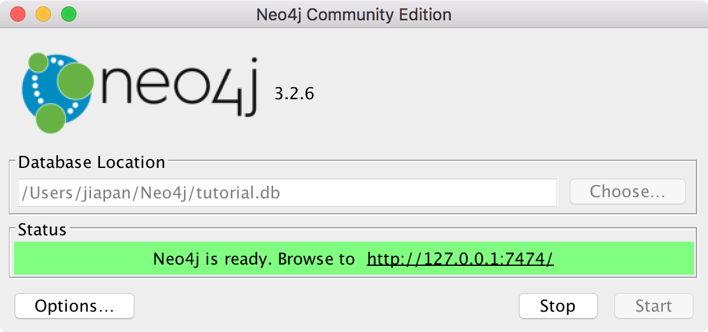
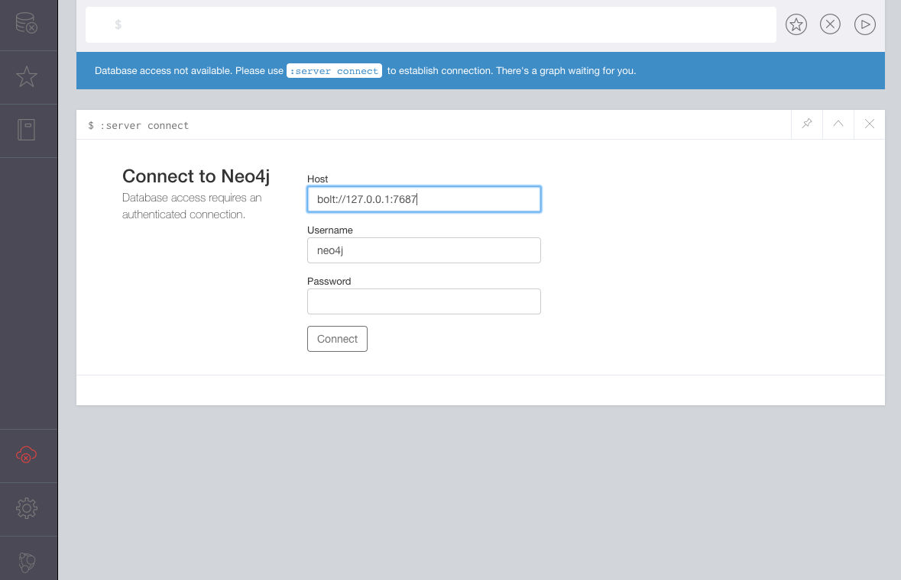
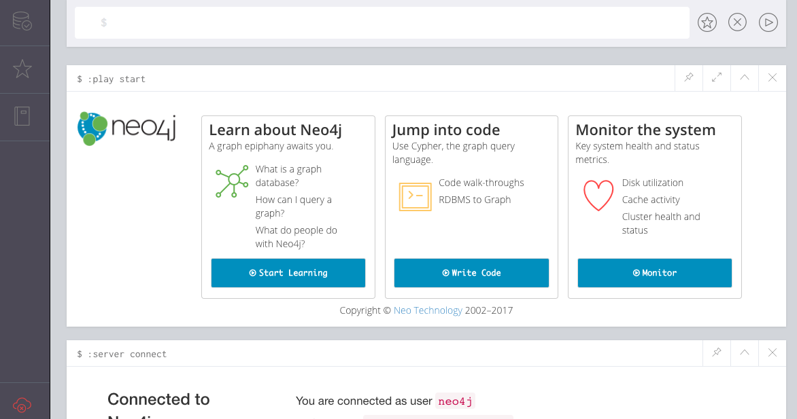

本篇来简单介绍下如何下载并安装 Neo4j，篇目很短，因为真的很简单。
下载 Neo4j
首先在 https://neo4j.com/download/ 下载 Neo4j。你可以选择企业体验版或者免费的社区版，这里我是用的社区版。点击 Download 按钮即可开始下载。
网站会自动下载适合您操作系统的文件，如果你不想要这个，可以选择通过 这个链接 选择另一个操作系统的版本。
安装 Neo4j
当文件下载下来后，就可以安装 Neo4j 了。下载页面包含了将 Neo4j 安装到你的操作系统的一步步指导说明，我在这里介绍下 Mac、Windows 和 Linux 的安装。这里列出的说明，是为了让你快速了解安装 Neo4j 所涉及的步骤，实际步骤可能会随着未来的版本而变化，所以请务必按照下载时网站上的说明来进行安装。当你下载 Neo4j 时，Neo4j 会在感谢页面展示这些说明。
Mac (dmg)
这个安装程序包含了运行 Neo4j 所需要的 Java 版本。
- 打开你刚刚下载好的 dmg 文件
- 将 Neo4j 的图标拖拽到你的应用目录中
- 在应用目录中打开 Neo4j，你可能会被系统询问是否是你从互联网上下载的这个程序，不要担心，确认即可
- 点击 Start 按钮来启动 Neo4j 的服务
- 在你的浏览器中打开程序提供给你的 URL
- 为
neo4j账户修改密码
Linux/Unix (tar/tar.gz)
- 打开你的终端
- 使用
tar -xvf <file>来提取存档的内容。比如tar -xvf neo4j-community-3.2.8-unix.tar，如果你下载的是tar.gz的压缩包，那么使用tar -zxvf来进行解压 - 使用
$NEO4J_HOME/bin/neo4j console来运行 Neo4j，或者用$NEO4J_HOME/bin/neo4j start让服务进程在后台运行 - 在你的本机浏览器访问 http://localhost:7474
- 为
neo4j账户修改密码
Windows (exe)
这个安装程序包含了运行 Neo4j 所需要的 Java 版本。
- 运行你刚刚下载的安装程序，你可能需要给这个程序的安装权限来授权
- 按照提示选择运行 Neo4j 的选项
- 点击 Start 按钮来启动 Neo4j 服务器
- 在浏览器中打开程序提供给你的 URL
- 为
neo4j账户修改密码
Windows (zip)
- 首先安装 JDK8
- 找到压缩包，点击右键进行解压
- 把解压出的文件放到服务器的主目录中，顶级目录称为
NEO4J_HOME，比如D:\neo4j\ - 使用 zip 包中提供的
Windows PowerShell来启动和管理 Neo4j - 在浏览器中访问 http://localhost:7474
- 为
neo4j账户修改密码
启动并连接到 Neo4j 服务
1. 启动服务
这里是一个已经启动起来的 Neo4j 服务，启动方法取决于你的操作系统，我这里用 Mac 来举例，在应用目录中点击 Neo4j Community Edition 3.2.6，点击打开窗口中 Start 按钮即可启动 Neo4j 服务。

服务启动后，在浏览器中打开 http://localhost:7474 然后按照提示进行操作。
下图是我第一次进入的界面（未来版本可能会看到不同的界面）

2. 登录
使用界面上提供的用户名和密码来登录，默认的密码是 neo4j
第一次登录时，系统会提示你修改密码
3. 结果
密码修改完成后这个界面将会被展示

在这里，你可以使用当前界面提供的链接来学习更多关于 Neo4j 的知识以及如何创建数据库和运行查询语句